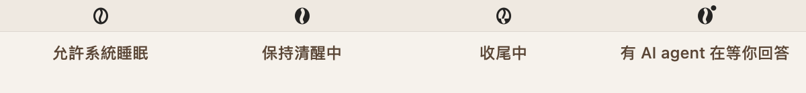
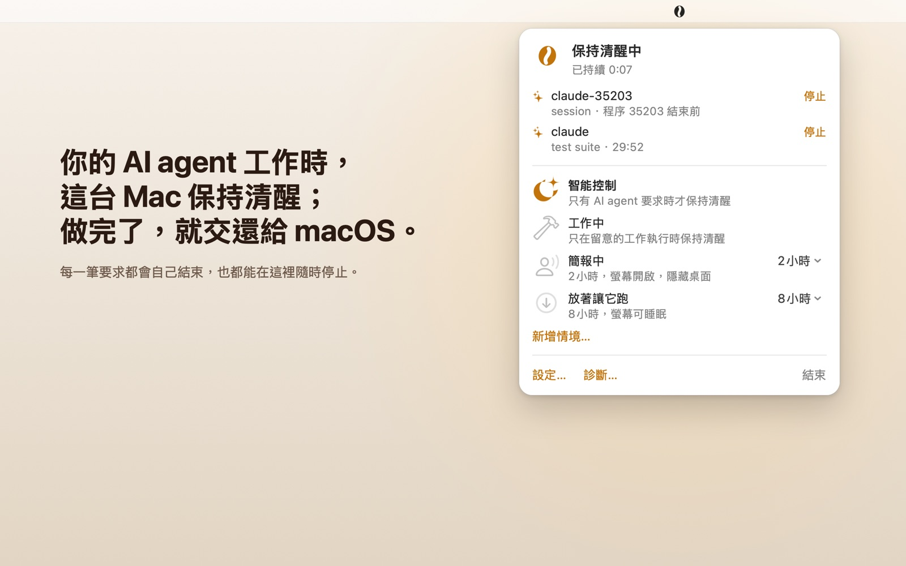
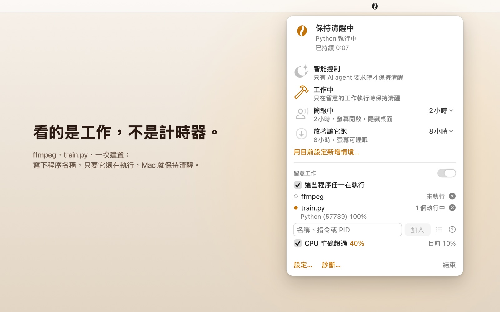
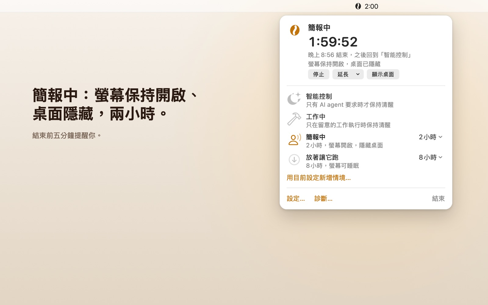
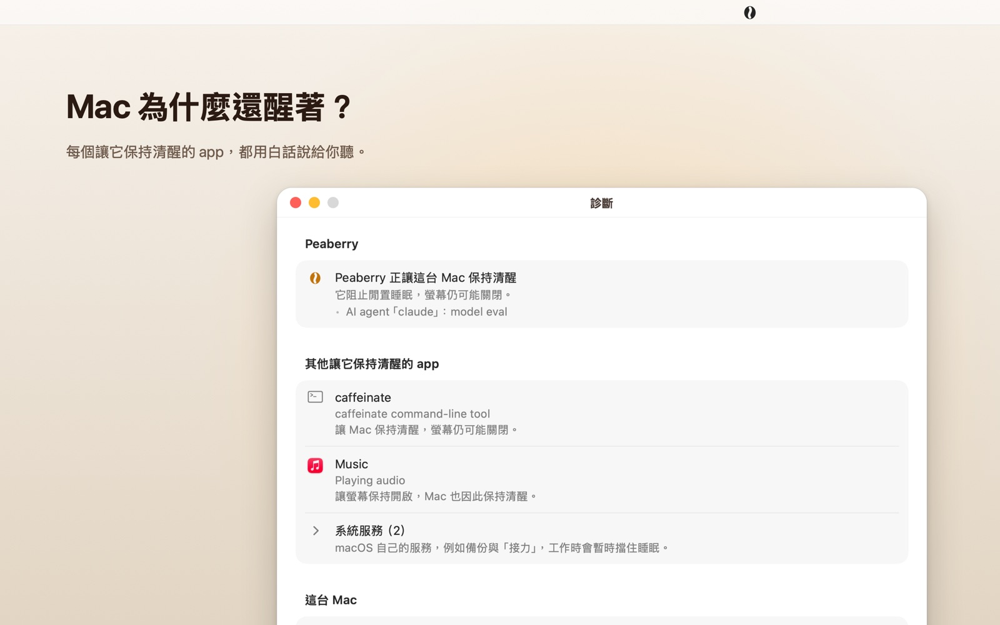
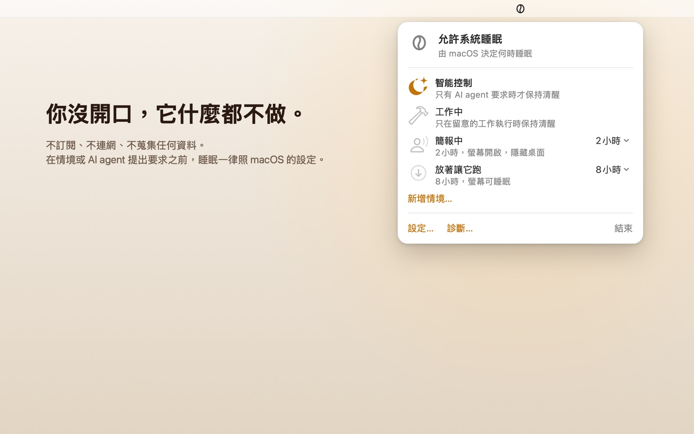

AI agent 還在工作，Mac 就不睡。
最後一個 agent 做完，睡眠就交還給 macOS 原本的設定。不必再為了怕中斷而把睡眠整個關掉，工作也不會因為沒人碰鍵盤，就在半路斷掉。
即將在 Mac App Store 上架
適用 macOS 15 以上，Apple 晶片與 Intel 的 Mac 都能用。

讓 agent 自己開口
沒人碰鍵盤，macOS 就會睡。agent 跑長時間的工作時也不會去碰鍵盤，於是 Mac 一到閒置時間就在工作途中睡著，整個工作階段也跟著斷掉。有了 Peaberry，agent 會自己要求它的工作需要的那段時間。
# 這個 build 跑多久，Mac 就醒多久
open "peaberry://hold?pid=$$&id=claude&reason=build" && ./build.sh
# shell 一結束，要求也跟著結束，不必另外釋放- 每一筆要求都會自己結束
- 要求綁在一個程序上，或是一段分鐘數，最長 24 小時。agent 當掉或忘了收尾，它的要求照樣會結束，程序結束後幾秒內就放手。
- 多個 agent，同一台 Mac
- 每個 agent 用自己的名字持有自己的租約，最多同時 16 筆。同名的會取代前一筆，不同名的並存。只要還有一個在工作，Mac 就保持清醒。
- 開關在你手上
- agent 只能提出要求。要不要讓它們要求，是「設定 › AI agent」裡的一個開關，沒有任何指令能替你打開。在你決定之前，「智能控制」下的第一筆要求會先放行最多 15 分鐘，免得工作白做；面板上可以直接停止，或選擇永遠允許。每一筆要求都有自己的「停止」按鈕。
- 查狀態很便宜
--brief一行就回答完。--wait會一直等到真的有事（要求結束、電量偏低、Peaberry 被結束）才回一行；實測等一分鐘只花 0.03 秒 CPU。- 電池見底前先收尾
- 使用電池、電量剩 20% 或只剩 20 分鐘時，來查狀態的 agent 會被告知：把工作做到一個段落、釋放要求，並告訴你做到哪裡。
設定你的 agent
- 打開「設定 › AI agent」，按「複製指示」。
- 貼到你的 AI agent 對話框。它會讀取 Peaberry 內附的技能檔案，以它自己的方式安裝，再告訴你裝在哪裡。任何讀得到檔案、能執行 shell 指令的 agent 都能用。
- 打開「允許其他程式用 peaberry:// 要求保持清醒」，要求才能持續到整份工作做完。
技能會請 agent 在每個工作階段一開始就提出一筆要求，綁在它自己的程序上：它想事情時 Mac 不會睡，工作階段一結束就放手。Peaberry 沒在執行時，agent 不會去動它。app 更新帶來新版技能時，agent 看到版本號比較大，就會自己換掉手上的那份。
$ /Applications/Peaberry.app/Contents/MacOS/Peaberry --brief
running=1 holding=1 scene=system holds=claude-1940,render:5380 agent-control=on warnings=none skill=2 age=3或者，讓它自己看著工作
切到「工作中」情境，Peaberry 就會在你指定的程序執行時、或 CPU 忙碌時讓 Mac 保持清醒。工作停止後再等兩分鐘才允許睡眠，所以一個工作接下一個工作之間的空檔不算數。
- 比對你實際在跑的東西
- 程序名稱、
argv[0]、腳本檔名、PID，也支援萬用字元。train.py會比對到python3 /work/train.py --epochs 10，python*會比對到python3.12。也可以直接從執行中的 app 挑選。 - 看得見比對到什麼
- 面板會列出每個符合的程序與它的 PID、CPU，規則有沒有在作用，一眼就知道，不必用猜的。
- 忙就是真的忙
- CPU 規則用的是所有核心 15 秒的平均，與你設定的門檻比較。面板上有即時數值，方便你抓一個合理的門檻。
- 需要時才去看
- 只有在規則用得到時才會列舉程序。在「智能控制」下，Peaberry 每 3 秒讀一次系統 CPU，除此之外什麼都不做。
四個情境
一次只有一個情境在運作。在面板上點一下就切換，也可以複製任何一個，改成你自己的。
-
智能控制
預設睡眠照 macOS 原本的設定走。唯一會讓 Mac 保持清醒的，是 AI agent 的要求。
-
工作中
工作在跑時你指定的程序在執行、或 CPU 忙碌時保持清醒，結束後再多等兩分鐘。
-
簡報中
2 小時螢幕保持開啟，桌面藏在你的桌布、漸層或一個顏色後面。
-
放著讓它跑
8 小時下載、匯出、備份這類你會走開的工作。螢幕可以睡。

有時間限制的情境在結束前 5 分鐘會發一則通知，可以直接延長 30 分鐘。另有全域鍵盤快捷鍵可以開始與停止限時情境，出廠是關閉的，要你自己打開。
為什麼我的 Mac 還醒著？
或是，為什麼它睡著了？設定裡的「診斷」分頁兩個問題都回答，一個答案一行，不用自己去翻。
- Peaberry 自己正在做什麼，是哪一條規則或哪個 agent 要求的。
- 其他所有讓 Mac 保持清醒的 app，系統服務收成一列。
- 有沒有排定的睡眠，是誰排的。
- 目前的電源，以及距離你上次碰鍵盤或滑鼠多久了。
- 唯一誰都擋不住的情況：MacBook 闔上螢幕、又沒接外接螢幕。
沒有什麼需要你信任的
- 不連網路
- 這個 app 完全沒有網路存取權限。就算它想連線，macOS 的沙盒也會擋下來。
- 不收集任何資料
- 沒有分析、沒有帳號、沒有追蹤。App Store 的隱私權標籤是「未收集資料」。隱私權政策
- 沒有加購
- 沒有訂閱、沒有 App 內購買、沒有廣告。
- 不吃你的效能
- 豆子在動的時候，實測約占單一核心的 1.5%；在「智能控制」下閒置時約 0.1%。選單列動畫也可以在設定裡關掉。
截圖

每個 agent 的要求各占一列，附上它給的理由與「停止」按鈕。 
工作中：比對到的程序，連同 PID 與 CPU。 
簡報中：螢幕開著、桌面隱藏，兩小時。 
診斷：所有讓 Mac 保持清醒的東西，以及原因。 
智能控制：在 agent 提出要求之前，睡眠都照 macOS 的設定。
系統需求
- macOS
- macOS 15 Sequoia 或以上。
- Mac
- Apple 晶片或 Intel，同一個通用 app。
- 語言
- English、繁體中文、日本語、Español。
- 它在哪裡
- 在選單列上，沒有 Dock 圖示。第一次打開時會出現一個簡短的歡迎視窗；保留「登入時自動啟動」的勾選並按「完成」，就會加入登入項目。
- 輔助使用
- VoiceOver 會念出選單列項目目前的狀態，例如「Peaberry，保持清醒中」。
- 限制
-
- MacBook 闔上螢幕且沒接外接螢幕時仍會睡眠，任何 App Store 上的 app 都改不了這點。
- Peaberry 擋的是閒置睡眠，擋不住別人排定的睡眠。
- 其他使用者（例如 root）的程序只能用名稱比對。
支援
問題、錯誤回報與功能建議，請到 GitHub 上的 issue tracker。Peaberry 的原始碼沒有公開，那個 repository 只放這個網站與 issues。
請參閱隱私權政策。
即將在 Mac App Store 上架